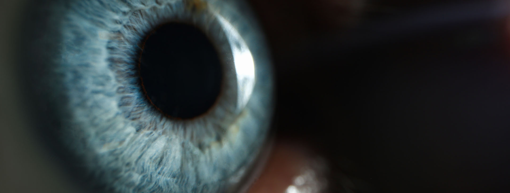
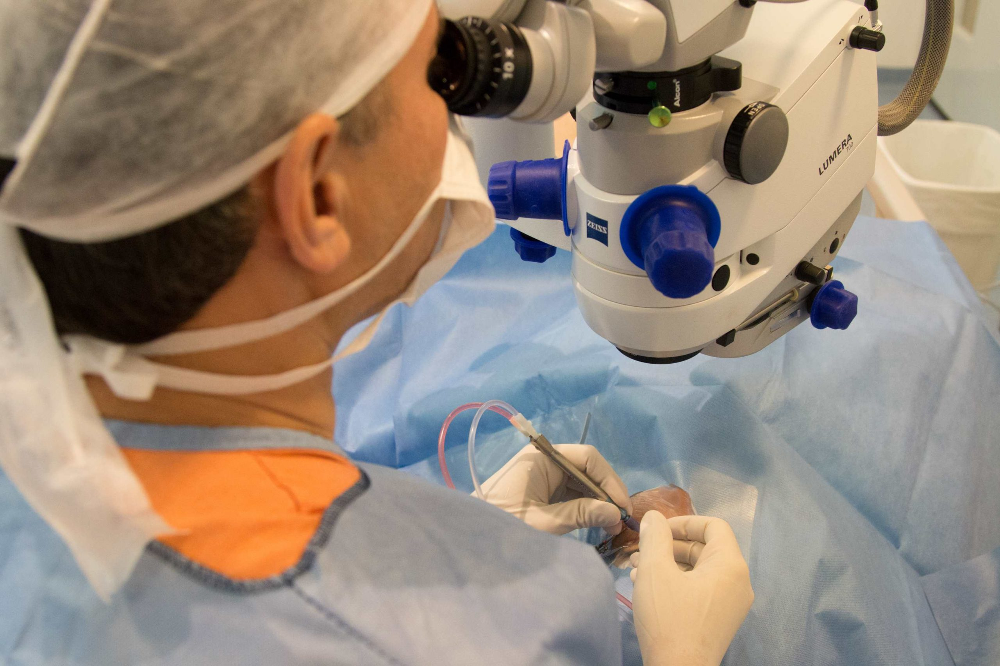
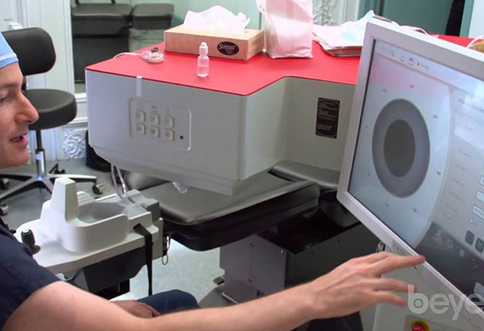
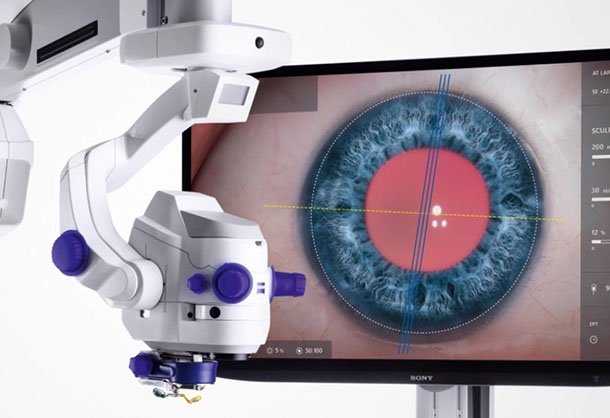

Tratamento com Laser de Femtosegundos
O laser de femtosegundos representa uma inovação significativa no tratamento de catarata, proporcionando maior precisão, segurança e eficácia. Essa técnica avançada utiliza o laser de femtosegundos para realizar todas as incisões e fragmentar a catarata, tornando o processo de aspiração mais simples e seguro. O procedimento com laser reduz o trauma cirúrgico e melhora os resultados para o paciente, elevando o padrão de segurança.
Implante de Lente Intraocular na Cirurgia de Catarata
Após a remoção da catarata, uma lente intraocular é implantada para substituir a função óptica e mecânica do cristalino. A lente é cuidadosamente calculada para garantir que o paciente recupere a visão com máxima precisão. Dependendo da lente escolhida, é possível corrigir miopia, hipermetropia, astigmatismo e presbiopia, reduzindo a necessidade de óculos. O ICONE utiliza a tecnologia ZEISS e o Sistema ORA para alcançar alta precisão nos implantes de lentes, garantindo o melhor resultado visual.
ZEISS Cataract Suite: Tecnologia Completa para Cirurgia de Catarata

O ICONE oferece a ZEISS Cataract Suite, um conjunto de equipamentos de ponta que proporciona segurança e precisão máximas na cirurgia de catarata. O processo começa com o IOL Master 700, que coleta dados oculares detalhados, seguido pelo planejamento cirúrgico no sistema Zeiss Forum. A cirurgia é realizada com o microscópio Zeiss Artevo 800 3D, que oferece um reconhecimento anatômico digital completo do olho, garantindo o posicionamento exato da lente intraocular e das incisões.
Catalys Laser System: Tecnologia Avançada no Norte-Nordeste
O ICONE é pioneiro no uso do Catalys Laser System no Norte e Nordeste, trazendo maior precisão e conforto para o paciente. Essa tecnologia oferece um procedimento mais seguro e eficaz, sendo considerada uma das mais avançadas do mundo no tratamento a laser de catarata.

Sistema ORA com Aberrometria Transoperatória
O ICONE é referência em aberrometria transoperatória com o sistema ORA, que utiliza inteligência artificial para ajustar, durante a cirurgia, a posição e potência da lente intraocular. Esse sistema analisa continuamente os resultados, aprimorando a precisão com cada cirurgia realizada, criando um processo de autoaperfeiçoamento contínuo para resultados cada vez mais precisos e personalizados.
OPERIO: Prevenção de Infecções na Sala Cirúrgica
A segurança do paciente é prioridade no ICONE, e a tecnologia OPERIO é crucial para a prevenção de infecções. Este sistema filtra o ar da sala cirúrgica, removendo praticamente todas as partículas que escapam do ar-condicionado. Com o ar ao redor do paciente totalmente purificado, o risco de infecção é significativamente reduzido, proporcionando um ambiente mais seguro.
ZEISS Artevo 800: O Melhor Microscópio Cirúrgico do Mundo
